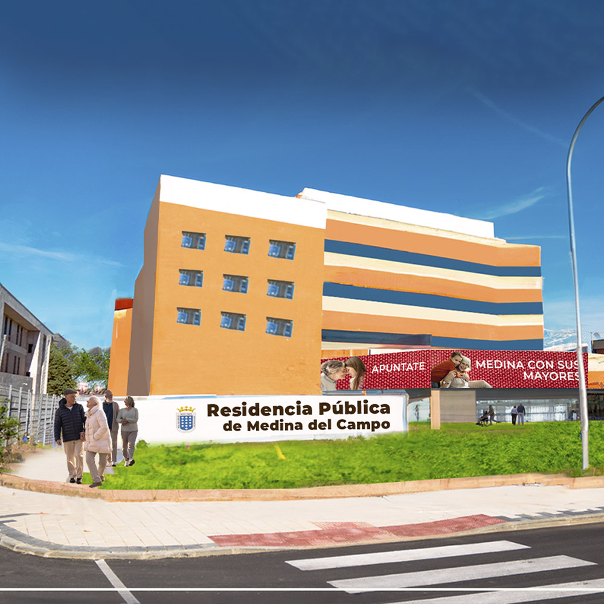
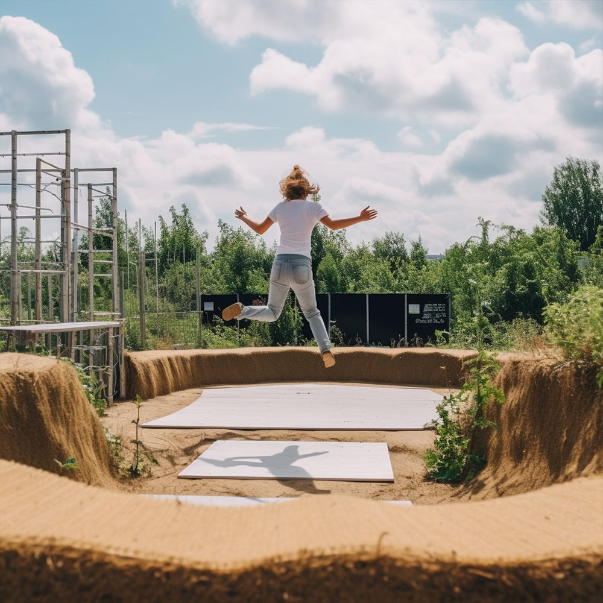
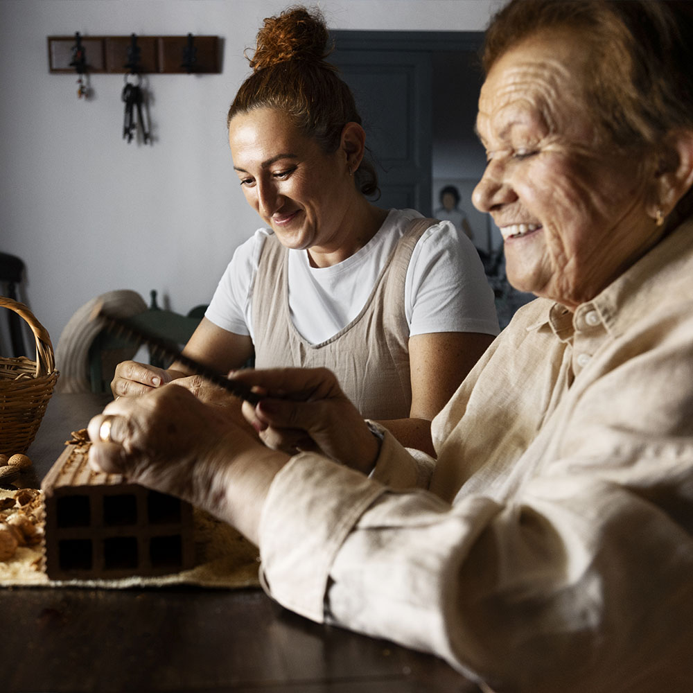

Creación de una residencia Atendiendo a la demanda de muchos medinenses, retomamos el trabajo iniciado para la construcción de la residencia para la tercera edad, con plazas concertadas y accesibles a la solvencia económica de nuestros mayores, con un centro de día asociado.

COHOUSING Facilitación de la creación de viviendas cooperativas, servicios comunitarios y apartamentos individuales para la potenciación de la cohesión social entre generaciones.
El cohousing es un servicio de viviendas individuales pero con servicios comunitarios compartidos que incluyen lavandería, comedor, atención médica, fisioterapia, etc. Una nueva forma de vida: envejecimiento activo. Promoción de actividades para la vida activa Creemos que es indispensable para la salud integral ofrecer actividades que movilicen a la ciudadanía para su autocuidado desde atención temprana, talleres ocupacionales y prácticas de innovación social hasta la promoción de la convivencia, excursiones, huertos urbanos, etc.

Unidades de atención ciudadana Nos proponemos ofrecer un servicio de carácter preventivo, promoción personal y convivencia a través de la formación de consejos sectoriales con mesas de trabajo y reglamento del consejo municipal de servicios sociales, participando en la planificación, ejecución y seguimiento de las mismas.

Proyecto estratégico para prevenir la soledad La “soledad no deseada”, tanto en jóvenes como en mayores, cuenta con una incidencia creciente con gran repercusión en la salud física y mental. Es necesario crear oportunidades en encuentro interpersonal, facilitar los vínculos den los barrios y fomentar la sensación de pertenencia a través de los Activos de Salud, mapeado para describir recursos informales, personales y simbólicos y a través de herramientas como “mapa emocional”, fotovoz, baraja saludable, el árbol y la diana de evaluación.
Potenciación del centro de acción social (CEAS) Creemos en la alta calidad de los trabajadores y en el potencial del centro por lo que nos comprometemos a que haya un contacto directo, potenciar las actuaciones, mejorar las instalaciones y completar las necesidades del personal. Creemos necesaria también una actualización de la coordinación sociosanitaria y la difusión entre ambas áreas de los protocolos interrelacionados. Ayuda a domicilio Es urgente y necesario seguir ampliando las prestaciones de este servicio y disminuir las listas de espera exigiendo a la Junta de Castilla y León que cumpla la ley de servicios sociales y aporte la financiación establecida del 90%. Así como reforzar la figura de la comisión de seguimiento para garantizar los derechos de los usuarios y los trabajadores. Potenciar la teleasistencia
Existen avances en el área, como es la teleasistencia avanzada Servicio de lavandería Ahora, pretendemos seguir ampliando las prestaciones implementando el servicio de lavandería para seguir promocionando la autonomía personal, así como la protección y cuidado de nuestros mayores. Ley de Dependencia Para que sea efectiva y útil proponemos facilitar e impulsar una coordinación sociosanitaria eficaz. Atención adaptada a las necesidades: Medina Escucha Creemos que la respuesta institucional debe regirse según las necesidades de los usuarios. Para ello debe haber un canal de comunicación directa y una voluntad de escucha activa por parte de las autoridades responsables.
Atención ciudadana
Reformulación del servicio de atención al ciudadanoA través de la creación de un centro de atención a la ciudadanía bajo la premisa:
MEDINA:
TEA
yuda
TEApoya,
TEAcompaña
Desde el que se ofrezca una guía al consumidor, a través de la figura del defensor del usuario, información y orientación.
Ayuda a la conciliación
Reapertura de la guardería municipal Castillo de Colores Para evitar la despoblación que tanto nos preocupa, y evitar así, la pérdida de servicios, creemos imprescindible la ayuda a la conciliación familiar. El aumento de demanda de plazas en la guardaría San Francisco hace que sea urgente y necesaria la reapertura de la guardería Castillo de colores.
Atención a personas con necesidades especiales
Accesibilidad e inclusiónQueremos desarrollar un Plan integral de accesibilidad y supresión de barreras arquitectónicas en coordinación con el área de urbanismo para que Medina esté a la altura de las ciudades de referencia a través de un modelo de movilidad urbana, sostenible y seguro. Por medio de la instalación de recreativos y pasos de peatones adaptados, además de un mapa de zonas accesibles e inclusivas con la ayuda de pictogramas.
Viviendas tuteladasMedina tiene únicamente un piso tutelado, creemos que no es suficiente. Contamos con espacios reformables a disposición. Por ello, nos comprometemos a hacer todo lo posible para incrementar las viviendas tuteladas en número. Espacio Respiro familiarIgual de importante es poner atención a las personas con necesidades especiales como a quiénes los apoyan día a día, por esta razón creemos necesaria la puesta en marcha del servicio “cuidados al cuidador”, así como la aplicación del Plan Persona programado desde la consejería de sanidad que aún no ha sido operativo en nuestros servicios de salud. Programa de promoción y prevención: área psicovital-psicosocial-autocuidadoDesde nuestro grupo socialista, creemos imprescindible invertir en prevención, tanto primaria para la disminución del riesgo, segundaria para evitar grupos con riesgo como terciaría para paliar las consecuencias no deseadas. Formación y empleoFavorecer la inserción laboral de las personas con necesidades especiales es imprescindible para su integración, una de las formas más efectivas es la creación de micro empresas especializadas y la realización de talleres para ampliar sus posibilidades de inserción. Agrupación de asociacionesUna forma de potenciar las asociaciones es vincular el tejido asociativo existente entre sí según los intereses y fines comunes, compartir servicios públicos en post del beneficio mayoritario, establecer nuevos contactos sociales no explorados, realizar actividades nuevas como hidroterapia, arteterapia, teatro aplicado… Reconocer nuestras fortalezas como comunidad, procurando que las debilidades y adversidades sean menores y aprovechar al máximo las oportunidades al través del trabajo de campo y la intercomunicación. SensibilizaciónSoñamos con la integración total en la comunidad de las personas con necesidades para ello creemos imprescindible crear campañas de sensibilización y concienciación social y así, poder impactar sobre el comportamiento de servicios específicos a través de la investigación, la reflexión y la planificación, utilizando instrumentos de comunicación eficaces (internet, cine, televisión, folletos, personajes famosos, prensa, etc. En resumen, crear un marco amplio de los servicios sociales de Medina del campo y su comarca.
Para la mujer
Planes de igualdad empresas Promocionar el cumplimiento de la obligatoriedad de los planes de igualdad en las empresas, asegurar el derecho de la conciliación familiar, así como la facilitación y orientación para la incorporación femenina a trabajos emergentes (microempresas), prestar información a empleadas domesticas sobre derechos laborales y seguridad social. Tenemos la firme convicción de que la recuperación económica tiene que afrontarse con perspectiva de género. Mapa de procesos Consideramos necesario trabajar en un mapa de procesos que abarque el apoyo a la familia, la inclusión social y la autonomía personal de todas las mujeres víctimas de violencia de género. Objetivo violencia 0 Nos gustaría poner en marcha el PROYECTO 0, Agentes de Cambio contra la violencia de Genero (FEDEPE), a través de una metodología apreciativa basada en la nueva psicología positiva y de construccionismo social. Dirigido a personas de Medina y Comarca tanto mujeres como hombres. Detectar las Victimas (en la familia, el vecindario, las escuelas y centros de trabajo) para dar respuesta segura, inmediata y firme a la protección de la integridad física y psicológica de muchas mujeres y sus hijos o hijas menores (trabajo multidisciplinar asegurando formación y seguimiento de protocolos). Especial atención a mujeres mayores, a aquellas que sufren alguna discapacidad incluyendo a las pertenecientes a minorías étnicas y migrantes a través de la continuación del Plan de sensibilización y Prevención de la violencia de género de la oficina de Igualdad.
Sanidad
Cuidado y reivindicación de los Servicios Sanitarios Públicos Impedir la degradación de servicios sanitarios públicos en pro de la privatización. Nuestro Hospital y Centro de Salud Urbano no cuentan con gestión propia, haciéndolos poco atractivos para mantener a los profesionales y facultativos, esto es favorecido por la dirección actual de la Gerencia de Sanidad de la Junta de CyL, quiénes quieren unificar la gestión presupuestaria del Hospital Comarcal con el Hospital Clínico Universitario, previendo de este modo que no se cubrirán necesidades básicas y procesos del mismo modo que a través de una gestión propia.
Necesitamos servicios sanitarios de calidad y estamos dispuestos a exigirlos a través de todas las vías que no sean posibles
Coordinación y comunicación interdisciplinar Consideramos que se precisa coordinación interdisciplinar y conocimiento de protocolos de actuación para cubrir adecuadamente todas las necesidades de la población, por lo que se debe hacer efectiva la participación en las distintas plataformas del Consejo de Dialogo Social, el Consejo de Salud, el Consejo Escolar, el Comité de Ética, la Comisión mixta de trabajadores sociales, las Áreas de Salud. Buscando un enfoque efectivo y valorando el trabajo realizado. Además de la formación de una comisión informativa en los plenos para agilizar la comunicación con el consistorio. Medina Ciudad Saludable
Queremos incluir a Medina en el proyecto Ciudades Saludables de la OMS y en las redes europeas para la promoción de la salud.